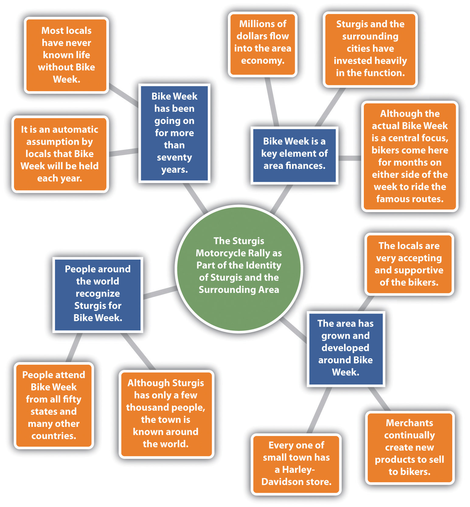

The composing habits of mind you developed in Chapter 1 "Writing to Think and Writing to Learn" through Chapter 4 "Joining the Conversation" should be applied to a writing process that works for you. When you start planning a writing project, you will need to understand the relationships among the three corners and the three sides of the rhetorical triangle described in Chapter 4 "Joining the Conversation": voice, message, and audience, as well as attitude, reception, and tone. After you have these core elements of the triangle in place, you are ready to map out your writing.
Life is simply too short not to write about topics that interest you. You don’t have to be an expert in a topic already, but you should be sufficiently interested in exploring it for a sustained period. Your readers will quickly pick up on your enthusiasm (or lack thereof) for a topic. Following up on personal interest can, at best, make a writing project fun, and at the very least, keep you (and your readers) from being miserable.
Most college writing instructors will not dictate too narrow a topic area, in part because they don’t have any interest in being bored and in part because they believe that topic generation is an important piece of the student writer’s job. But let’s explore a worst-case scenario, just to show how you can make practically any topic your own. Let’s say you are given an assignment to explore the history of South Dakota within a ten-page essay. Clearly, you can’t cover the whole state in ten pages. Rather, you would think about—and maybe research a little bit—aspects of South Dakota that might be interesting to you and your readers. Let’s say that you are a motorcycle enthusiast, and you are interested in Sturgis, South Dakota. Or perhaps your great-great-grandmother was a Dakota Indian, and you are interested in the Dakota Indian tribe. Or maybe you are an artist and you are interested in the corn mosaics on the Corn Palace in Mitchell, South Dakota. The point is that, if you think about South Dakota enough, you can find some direction of personal interest.
Assigned Topic
The History of South Dakota
Personal Interest Direction
The Motorcycle Rallies in Sturgis, South Dakota
First Narrowing of Topic
The Acceptance by Locals of the Mass Influx of Motorcycles over the Years
Final Topic
The Sturgis Motorcycle Rally as Part of the Identity of Sturgis and the Surrounding Area
Once you choose a direction of interest, such as the motorcycle rallies in Sturgis, you still have to narrow this secondary topic into a topic that you can cover in ten pages and that has an interesting point. A method of moving from your general topic of interest to your final topic is to ask questions and let your answers guide you along. The following questions and answers show how this self-discussionAsking and answering questions without involving another person. could go.
Question #1: How do the Sturgis Rallies connect to the history of South Dakota?
Answer: The Sturgis Rallies have been going on for over seventy years, so they are part of the history of South Dakota.
Question #2: Over the years, how have the people of Sturgis felt about all those bikes invading their peaceful little city?
Answer: I bet there are people on both sides of the issue. On the other hand, a lot of people there make a great deal of money on the event.
Question #3: After over seventy years, has the event become such a part of the city that the bikes aren’t really seen as an invasion but rather more like a season that will naturally come?
Answer: It probably has become a natural part of the city and the whole surrounding area. That would be a good topic: The Sturgis Motorcycle Rally as Part of the Identity of Sturgis and the Surrounding Area.
You have begun to narrow your general topic down to a more manageable and interesting set of questions. Now it’s time to bring in the other elements of the rhetorical situation.
With a partner or by yourself, narrow the following general topic areas to specific topics that would work in essays of approximately one thousand words:
After you have settled on a topic, you are ready to explore general ideas that you will include when you start writing. You can generate these ideas with whatever brainstormingA technique for invention (generating ideas for writing); can be verbal or written, in collaboration or in isolation. method works best for you, such as browsing the Internet to do an interconnected search from topic to topic, talking or texting with others, creating related visuals, asking yourself questions, freewritingA method of idea generation usually involving a period of five to ten minutes of writing (or typing) without stopping, followed by another round of writing on a narrower passage of interest from the first round of freewriting. and mappingA method of using shapes filled with text to create visual ideas for a writing process and to show how the ideas are related; also called clustering and branching, or making a web.. In this section, we will explore these latter two options.
Freewriting requires finding a quiet place to write without distraction. Most versions involve starting with a word or phrase (usually your topic) and writing (or typing) about it without stopping for five minutes. It’s helpful to set a timer for each round of freewriting. After the first five-minute period, you examine your text for any phrases or words that look interesting to you. Circle them (or if you are typing, highlight, italicize, bold, or underline them). In the second round, you freewrite for another five uninterrupted minutes on your choice of the most interesting word or phrase from your first freewrite. Sometimes even a third round can help you narrow the topic further. For each round of freewriting, you should be unconcerned about your writing’s grammar or mechanics, how it would look to an outside audience, or even whether it would make sense to anyone but you. Freewriting is all about idea generation and exploration.
Mapping is a great visual means of gathering your ideas. Also called clustering and branchingA method of using shapes filled with text to create visual ideas for a writing process and to show how the ideas are related; also called clustering, mapping, or making a web. or making a webA method of using shapes filled with text to create visual ideas for a writing process and to show how the ideas are related; also called clustering and branching, or mapping., mapping lets you add as many ideas as you can think of and organize them as you go along. You have four general options for mapping.
No one option is superior to another. You should choose the option that works best for you. Using whichever option you choose, the point is to start with your main topic and then think of related subtopics and, for each subtopic, to think of supporting details resulting in a visual that shows the relationships between the key points of your writing plan. Since mapping is actually a visual brainstorming process, you do not have to generate your ideas in an orderly fashion. When you think of an idea, you can add it wherever it fits across the map.
In the concept-mapping software, you will be able to choose the level of the point you will add as well as the larger idea to which you want to attach each point. If you are creating your concept map structure yourself, make it clear to which level each addition belongs.
Study Figure 5.1 "Concept Map of Sturgis Motorcycle Rally" for clarification on how the process works. This map was made in Microsoft Word by creating circles, squares, and lines and placing them by hand into position. You can use all circles or all squares or whatever shape(s) you would like. This map uses a combination of squares and circles to make the subtopics stand out clearly from the details. This map also uses color to differentiate between levels.
Figure 5.1 Concept Map of Sturgis Motorcycle Rally
When the ideas stop flowing, put your map away and return to it later for another brainstorming session. Keep your freewrites and maps close at hand and feel free to add tidbits when they come to you. Get into the habit of keeping a writing pad and pen or pencil (or just your cell phone) next to your bed, so that you can jot down or text ideas as they come to you in the middle of the night. When you are comfortable that your map offers a good representation of the points you want to include in your paper, use it as a guide during the writing process.
After you have settled on a specific writing topic, it’s time to return to some of the basic principles of rhetoric introduced in Chapter 4 "Joining the Conversation" so that you can think through your real purposes for writing and explore the key details of your rhetorical situation. This section will show you how to use both the corners and the sides of the rhetorical triangle as tools for thinking, planning, and writing. Notice how these choices you make about purpose, message, audience, and voice are never made in isolation.
PurposeThe sum total of what a writer intends to accomplish.: You may think that purpose can be boiled down to one of these single verbs or phrases:
However, your real purposes for writing are really more complicated, interesting, and dynamic than this simple list. Purpose involves all three sides and all three corners of the rhetorical triangle: not only do you want to make your audience feel or think a certain way about your message, but you also want to explore and refine your own thoughts and feelings about that message, and furthermore, you want to establish a certain kind of relationship with your audience through the act of conveying your message to them.
Once you have identified your purposes and the corners of the rhetorical triangle, it’s time to do some preliminary thinking about the relationships between those corners—that is, the sides: voice and message (attitude), message and audience (reception), and voice and audience (tone). Finish the sentences below.
Figure 5.2 Your Rhetorical Situation

Near the beginning of the writing project, you could write up a preliminary statement of purposeA preliminary tool for developing your purposes for a writing project, specifically your message, audience, voice, attitude, reception, and tone. based on how you complete these sentences and use it as a strategy memo of sorts:
| Voice | I am writing as a person unfamiliar with South Dakota culture who has been assigned the task of writing about it. |
| Message | I want to convey the message that the Sturgis Motorcycle Rally is an interesting phenomenon of popular culture. |
| Audience | I want to write to my teacher and the other members of my writing group. |
| Attitude | My attitude toward the subject is pretty neutral right now, bordering on bored, until I find out more about the topic. |
| Reception | I want my audience to know that I know how to research and write about any topic thrown at me. |
| Tone | My tone toward my readers is semiformal, fairly objective, like a reporter, journalist, or anthropologist. |
Because all the elements of the triangle are related to each other, all are subject to change when the direction of your work changes, so be open to the idea of returning to these questions several times over the course of your writing project. When you are ready to turn in your project, revise your preliminary statement of purpose into a final version, or writer’s memoA method of presenting, packaging, reflecting on, and commenting on one’s own writing project, specifically its message, audience, voice, attitude, reception, and tone., as a way of presenting and packaging your project, especially if your instructor invites such reflection and commentary.
Here’s an example of a writer’s memo submitted with the Sturgis Motorcycle Rally essay:
| Voice | I am writing as a kind of social historian and observer of a specific example of popular culture. |
| Message | I want to convey the message that the Sturgis Motorcycle Rally has become an important part of the identity of Sturgis and the surrounding area. |
| Audience | I want to write to my instructor and classmates—but also to the citizens of Sturgis, South Dakota. |
| Attitude | My attitude toward the subject is neutral to positive. In general I think the rally has been good for Sturgis over the years. |
| Reception | I want my audience to understand and appreciate Sturgis Motorcycle Rally, and maybe to think about how something like it could work well in our community. |
| Tone | My tone toward my readers will be informal but informative, and occasionally humorous, to fit the craziness of Sturgis Motorcycle Rally. |
Your instructor may make decisions about the form your essay will take, dictating whether you are supposed to write in a particular genre. But if you’re given some choice or flexibility about form, just as in the case of voice, audience, and message, you need to make the most of that responsibility. Regardless of who dictates form, you or your instructor, know what form your writing should take and make sure it suits the voice, audience, and message. Some common forms of writing include the following:
An outline is another way to visually see the relationships between ideas you are gathering. You can create an outline by hand or on a computer. If you create one by hand, leave a blank space so you can fit additional ideas in within different areas. Using a computer for your outline is preferable since you can easily add ideas and move ideas around.
Start with your core idea as the beginning point of the outline. Then use roman numerals to add the subtopics followed by indented capital letters for the details. If you add finer details, you can use further-indented numbers for the next level and even-further-indented lowercase letters for a level after that. When using a computer, the preset tabs are most likely fine for the indenting.
The outline below relates to the map from the last section. It is simply another way to accomplish the same process of idea gathering. Notice that the writer here has made a sentence outlineAn outline with each element written out as a complete sentence. by writing out each element in a complete sentence. This strategy will help this writer move more easily from outline to essay draft.
Bike Week has been going on for more than seventy years.
Bike Week is a key element of area finances.
The area has grown and developed around Bike Week.
People around the world recognize Sturgis for Bike Week.
As with the mapping process, once you have included all the ideas you have, take a break and return to your outline later. If, in the meantime, a thought comes to you, take a minute to add it. When you are satisfied with your outline, use it to guide your writing process. However, keep in mind that your outline is only a tool you are using, and you will vary from it when you have other ideas along the way.
Within an outline, the numbering/lettering order is as follows:
Using a word processing program, present the following information in a short outline using at least two roman numerals and at least two capital letters. You will have to reorder the ideas so they make sense.
Ideas:
People need a natural comfort with technology before entering the workplace.
Students think in a technological way, so it’s wrong to pull them backward at school.
Students live in a technology age, so they should be educated in a technology age.
Students expect technology at school.
Students must experience using technology rather than just being told about it.
Even sixteen-year-olds are expected to be comfortable with computers on their very first jobs.
Most students use some types of technology at home.
Jobs ranging from waitresses to mechanics to nurses to lawyers require computer use.